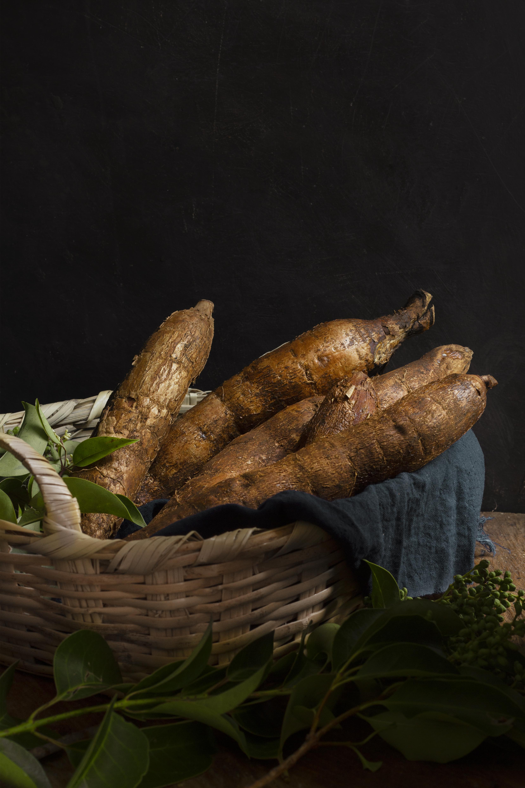

Grains and More
Quality grains, eggs and other farm products for homes and businesses.
Explore Our ShopAt GreenBasket farmacy, we believe fresh food should have a story you can trust. We grow and source quality produce with care, bringing the goodness of the farm closer to the people who enjoy it every day.
Explore Our FarmFrom everyday vegetables to seasonal favourites, GreenBasket Farmacy brings together produce selected for freshness, quality and flavour.
Quality grains, eggs and other farm products for homes and businesses.
Explore Our Shop
Naturally sweet seasonal fruits, selected when they're ready to be enjoyed.
Explore Our Shop
Wholesome staples including yam, cassava, sweet potatoes and other farm favourites.
Explore Our Shop
Crisp, colourful and carefully selected vegetables for everyday meals.
Explore Our ShopFresh Picks From The Farm

Juicy, vibrant tomatoes selected for their rich flavour and everyday cooking.
In Stock
Visit Our Shop Green Pepper
Green Pepper
Crisp and colourful peppers that add a fresh, mild flavour to your favourite dishes.
In Stock
Visit Our Shop
Wholesome, hearty yam with a firm texture, perfect for pounded yam, boiling, frying and other classic meals.
In Stock
Visit Our Shop